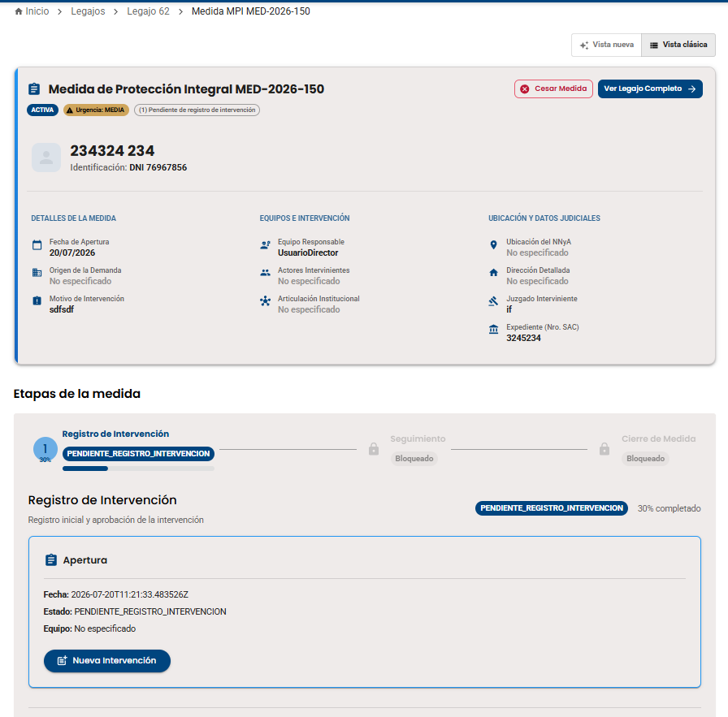
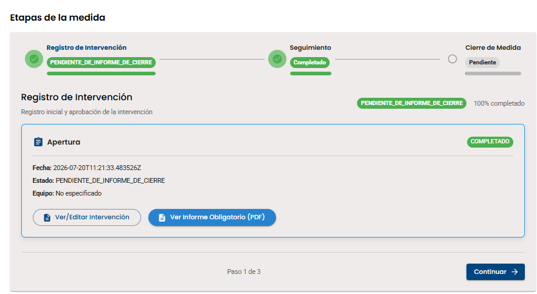
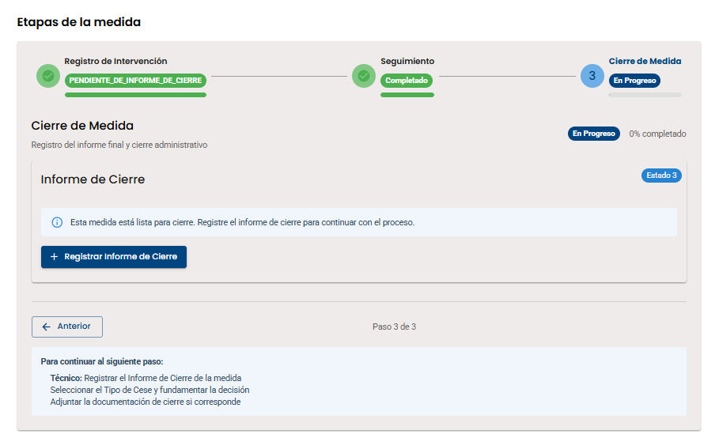
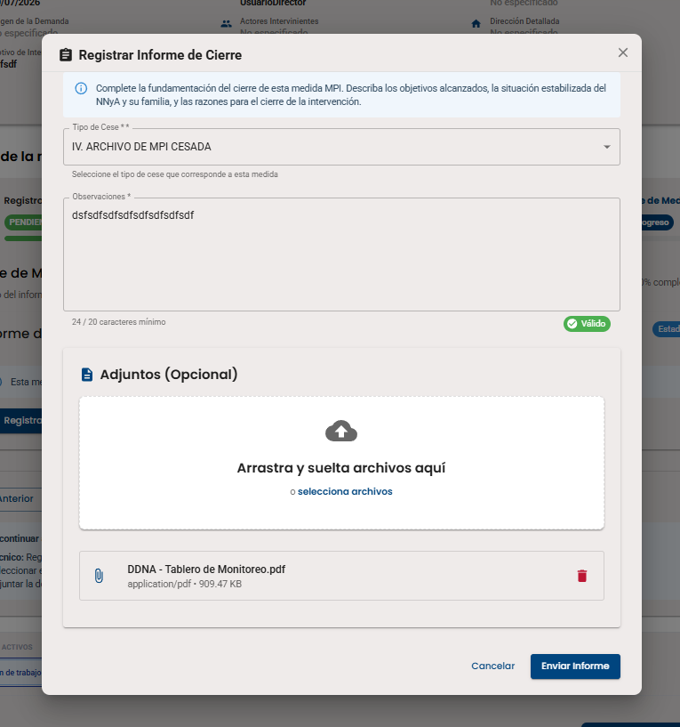
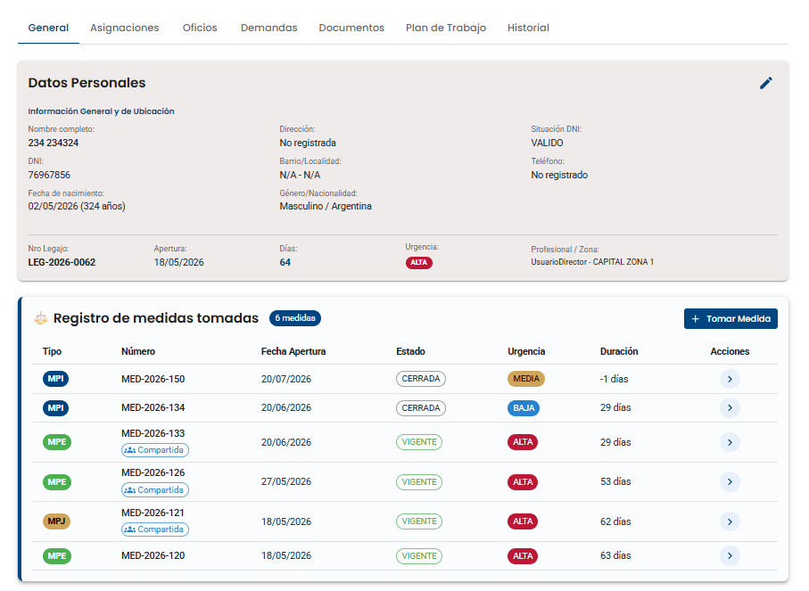

El cierre de una MPI se realiza en 3 etapas: Registro de Intervención (Pendiente de Informe de Cierre) → Seguimiento (Completado) → Cierre de Medida (Registro del Informe Final). Sin aprobaciones adicionales, solo el técnico completa el modal y la medida se cierra automáticamente.





Simulá el cierre de una MPI completando el modal de "Registrar Informe de Cierre".
Complete la fundamentación del cierre de esta medida MPI. Describa los objetivos alcanzados, la situación estabilizada del NNyA y su familia, y las razones para el cierre de la intervención.